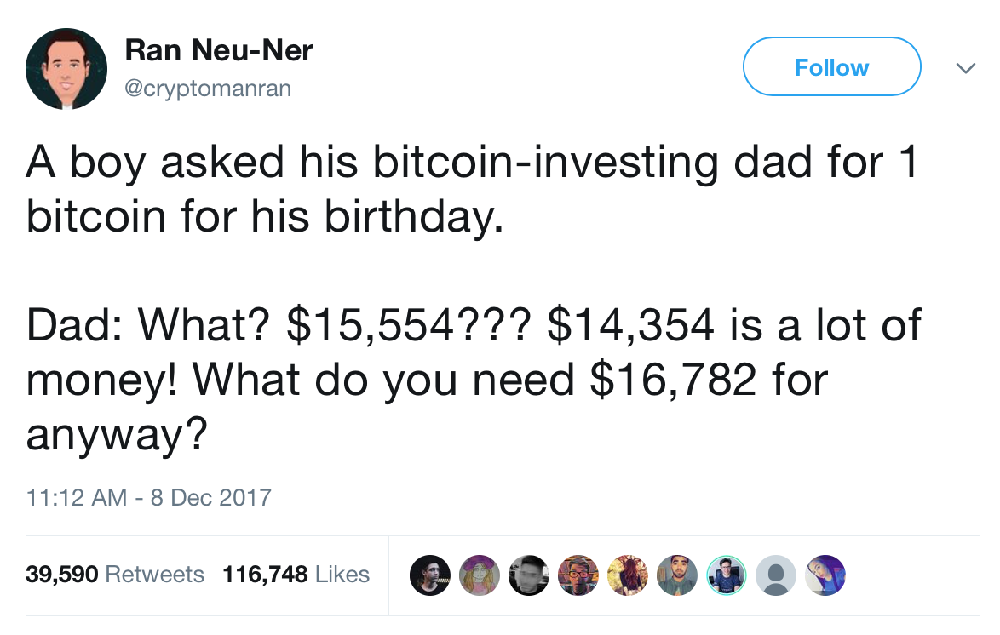

Eric Johnson
12-23-2017
This post is about Bitcoin, a digital currency. If you buy or sell bitcoins as a result of reading my writing I would be flattered, but don’t blame me for losing any money.
I do not have any positions in bitcoin or other crypto-currency. I do not think bitcoin is a good investment. I do think it is a wonderful alternative to scratch-offs and slots at a casino. By this I mean that I think it’s a really bad idea to invest significant portions of your net worth in Bitcoin, or to think that you can put your kids through college by buying them bitcoins and holding while they grow up. I think crypto-currency is awesome and really exciting and if you have the money to experiment in the space, more power to you.
To begin, let me clarify what I mean by an investment. When I think of an investment, I think of it as a vehicle through which I hope to accrue wealth over an extended period of time. More specifically, an investment should not lose my money and should provide stable income for the period of time over which I own it. One should be able to enter an investment with reasonable certaintity that it will not make them go broke. My definition of an investment builds largely from Security Analysis by Graham and Dodd 1.
There were times that (in hindsight) bitcoin may have been a good investment. Around five years ago, when bitcoins were beginning to be used to buy physical things it would have been a good idea to buy some. However, if you were buying then, you were probably just doing so to find cheap deals for things you wanted on the internet. Now this is not the case. Bitcoin is not being used as a currency anymore2. Transactions take too long, price isn’t nearly stable enough, and the fees are too high. All of these factors mean that bitcoin cannot reasonably be used in its intended capacity, which diminishes any of the intrinsic value it once had.
Early adopters bought bitcoin because of its potential to become the new currency of the world. I would be comfortable betting that the majority of early adopters were not buying Bitcoins for a quick profit or even to sell to after a few years. They bought (or mined) bitcoins because they were convinced it was the future and they wanted to own a piece.
Now people buy a bitcoin to sell it. When you want to own a bitcoin, you download an app, make a wallet, and make your purchase. To sell you press a button on your phone or computer. You might not even know your wallet’s information and owning a bitcoin probably doesn’t feel much different than a credit card transaction. I would guess that the majority of Bitcoin owners do not know how to send or receive the actual bitcoins they have in their wallets. The original mechanics of the blockchain and distributed ledger have been abstracted away so non-computer scientists can take part in the Bitcoin market to buy and sell coins with ease. Buying something just to sell it for profit to a bigger fool is speculation. In this case, when you bought a bitcoin, you were already the fool rewarding someone else’s speculative bet. When Bitcoin stopped being utilized for its intended use, it lost its title as a potential investment and gained the title of a fun speculation.
Here’s another take on the idea. I recently listened to this podcast 3 that featured Dave Collum as a guest. He gave two additional reasons why Bitcoin will fail, which I will expand upon below.
For one, by historical norms, it’s a bubble. We can chart its rise and compare to Dutch tulip mania and the Dot-com boom as follows.
It doesn’t take a PhD to see that if the past patterns are remotely indicative of future performance, the future doesn’t look good. I understand this is not an apples to apples comparison, but that doesn’t invalidate the patterns shown above. But wait! cries the HODL-er. Bitcoin is revolutionary, it’s a new paradigm, it’s the future of money. True - maybe. The truth is, right now everyone is investing in Bitcoin for reasons I said above (i.e. because they think the price will go up and want to make fast money), and the people who bought it because of its future potential are largely either out of their positions (and rich) or are named Winklevoss 4. Most of the people buying bitcoins don’t understand the underlying technology and eventually everyone is going to want to take their money and run. Things will be bad for people left holding the coins when this happens.
The second reason Dave Collum mentioned has to do with governments. All signs point to the government (referring to the USA) not wanting crypto-currencies to be successful. The governments can thus prevent their rise in two ways.
First it can use its effectively infinite cash to manipulate the market and legally cause price swings to keep Bitcoin too volatile to be viable for usage as a currency (touched on this above). As Dave also mentioned about gold, if you cannot price your groceries in Bitcoin, you cannot use it as a currency.

Second, the government can make Bitcoin (and other coins) illegal. And yes of course, I realize the technology cannot ever be illegal. People can still mine and run the blockchain without the government’s approval. However, Bitcoin’s currently high value (~$15,000 USD when I wrote this) is from people buying and selling on Coinbase, not from personal miners and decentralized peer to peer transactions between them. If the government makes it illegal to make transactions on public services like Coinbase, bitcoin investors will almost certainly be too scared to use the services anymore, and also not inclined to learn how to do it with their own technology. The Bitcoin ecosystem will return to the state it was in its infancy. You won’t be buying bitcoins to turn a profit anymore under these conditions. But what about the anonymity of Bitcoin? In theory yes, Bitcoin transactions can be anonymous, but once again, people let Coinbase (or other services) trade bitcoins for them, and Coinbase is not anonymous 5. This means the legality of Bitcoin would be a limiting factor for its growth.
A final argument in favor of Bitcoin’s potential is the slow recognization of Bitcoin by banks and financial institutions. Goldman Sachs opening a crypto desk6 is a recent and very large example of this. Other companies are also endorsing blockchain backed systems7. For one, running/endorsing/supporting blockchain only validates that the blockchain is an important and useful technology. I completely agree with this, but it doesn’t have any correlation with the future success of Bitcoin. Second, it is important to note that Goldman Sachs employing people to trade Bitcoin with other people’s money does not mean the company endorses it. If a customer with a lot of money wants Goldman to spend their (the customer’s) money on Bitcoin, it is bad business for Goldman to say no to them. Financial institutions haven’t really endorsed Bitcoin or crypto-currencies until a prominent buy-side shop (think Two Sigma, Bridgewater, AQR) starts trading in the space. We would have to check regulatory filings to figure out if they have been doing this, but to my knowledge, all major funds have stayed away.
The general uncertainty and lack of clear path for supporting future growth is why I don’t want to invest in Bitcoin. I am constantly tempted to speculate on Bitcoin price movements to try and make fast money, but I don’t really want to lose so I probably won’t be buying any in the near future. I continue to be fascinated by the space and by the people with such interesting takes on the currency and underlying technology. Read the paper8 if you want to learn the technology powering the blockchain and then enjoy the Bitcoin show from the sidelines with me.
EDIT: Adding links I found for more reading about the subject below: